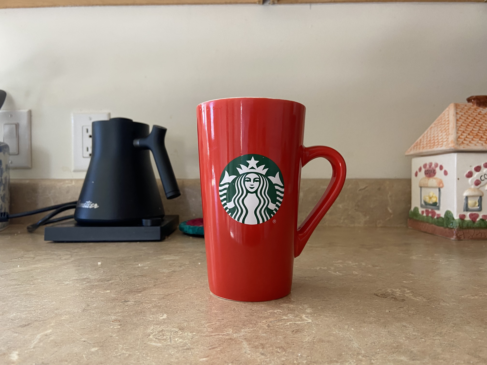
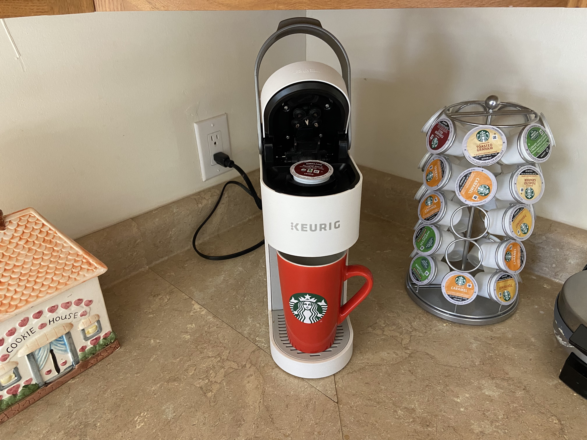
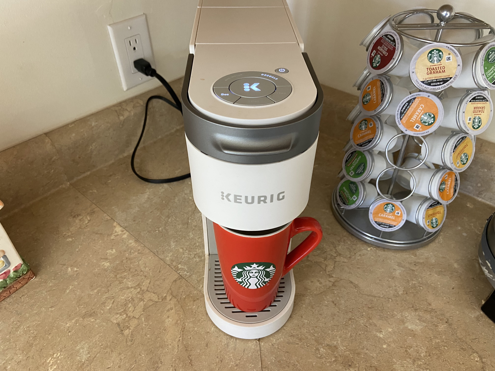
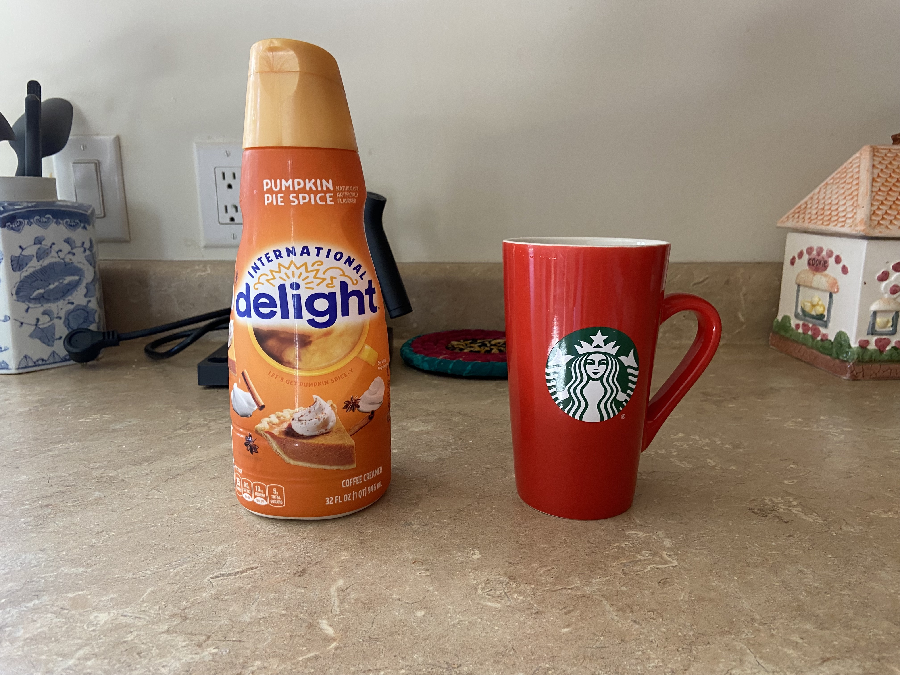
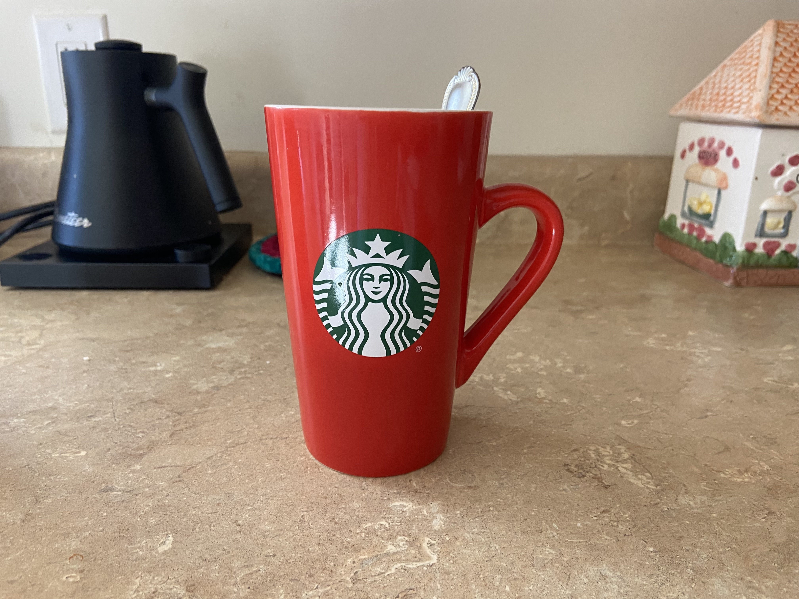

Ever wonder how to make the perfect pumpkin spice-flavored coffee at home? That warm spice-filled cup is only a few short steps away.

Step 1.Find the perfect coffee cup. This tall festive Starbucks cup is my go-to mug.

Step 2. Use a coffee you like! I enjoy a nice smooth dark blend.

Step 3. Make your coffee! I prefer to use my Keurig so I can make one cup at a time.

Step 4. Add in the best pumpkin spice coffee creamer: International Delight Pumpkin Pie Spice. This creamer has a sweet pumpkin taste that is delicious.

Step 5: Stir your coffee and enjoy! This easy pumpkin spice coffee is way cheaper and much more convenient than going to a coffee shop.